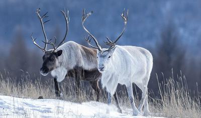
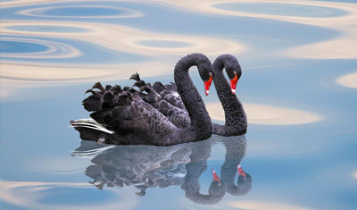
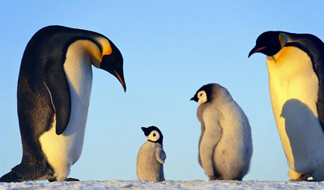
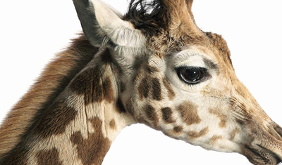
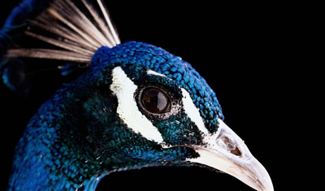
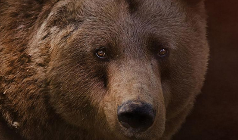

由于人类的破坏，与栖息地的丧失等因素，地球上濒临灭绝生物的比例正在以惊人的速度增长。 在工业社会以前，鸟类平均每300年灭绝一种，兽类平均每8000年灭绝一种；但是自从工业社会以来， 地球物种灭绝的速度已经超出自然灭绝率的1000倍。全世界1/8的植物，1/4的哺乳动物，1/9的鸟类，1/5的爬行动物，1/4的两栖动物，1/3的鱼类，都濒临灭绝。 一切自然物种及其群落都与所在地域的环境条件相适应，只要条件不变，就能长期生存，即使发生扩散或缩减， 其历程也是缓慢和渐变的。人类活动的加剧，却打破了这千古不变的平衡，导致物种灭绝，其中自然的灾害也是一部分的原因。





